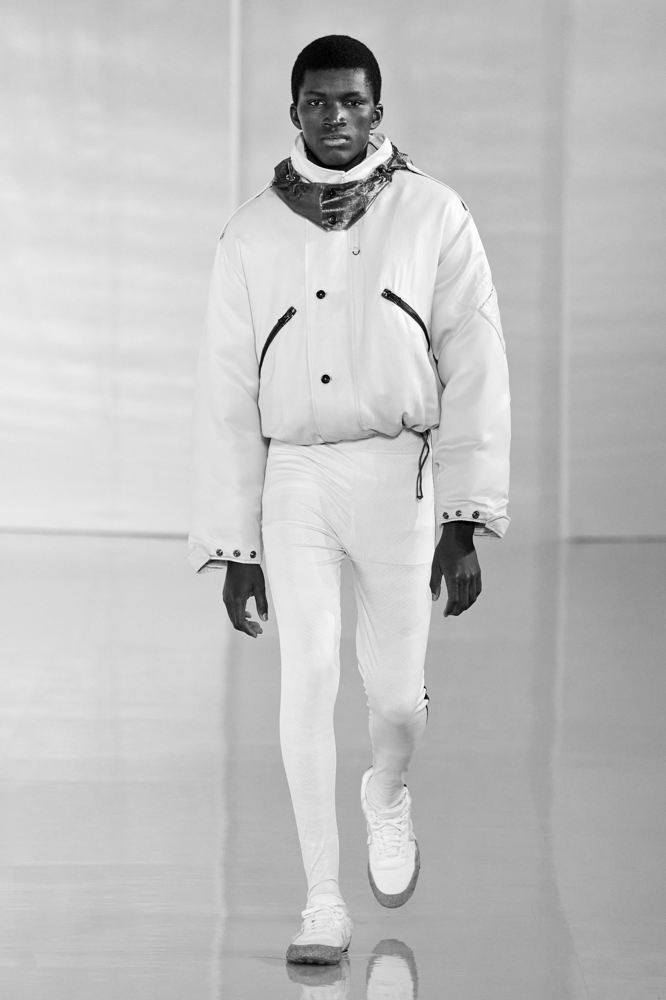

Jonny Johansson’s bio reads like an American Dream success story. Guy
from a small northern town grows up idolizing James Dean, Elvis Presley,
and Marilyn Monroe. Moves to the city to play guitar in a band (or several,
in this case) and eventually cofounds a Factory-inspired creative collective
with a bunch of friends with 10,000 euros between them. Designs a mean
pair of red-stitched jeans that forms the basis of a growing empire that
caters to cool kids with street smarts and style confidence who, noted Vogue,
“want style without association.”
What’s missing from this American as apple
pie–sounding story is the American, which might be guessed at by the brand’s
challenging name: Acne, an acronym for Ambition to Create Novel Expressions.
Johansson is a Swede who has benefited from Scandinavia’s reputation for
design and its relative outsider status, which is partly a result of geography.
An out-of-the-box thinker, Johansson has retained the multidisciplinary
organization of the company even after buying out, with executive chairman
Mikael Schiller, his partners. Acne Studios publishes a magazine and books,
and is keen on collaborative projects like unisex shirts colored “Snowdon Blue”
and a denim line with Lanvin (2008).
Despite the diversity of its activities,
the man and woman on the street recognize Acne Studios as a fashion label.
And within the fashion world, Acne is now accepted as a contemporary ready-to
-wear brand that has evolved from its denim roots, an important part of its
DNA.
Johansson has described denim as “the perfect canvas—functional, pure,
clean, generic,” and his best designs—in any material—are the ones that update
wardrobe staples for savvy design-aware kids. “We do respect history,”
Johansson told Vogue, “and we try to do something modern and new.”
CURRENT DESIGNER
JOHNNY JOHANSSON
FALL 2020 MENSWEAR
FALL 2020 READY-TO-WEAR
SPRING 2020 READY-TO-WEAR